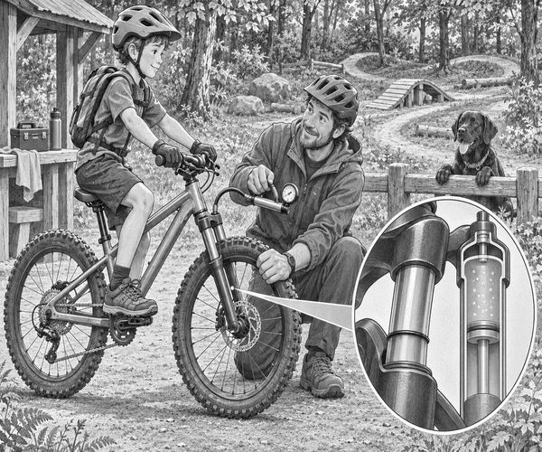

Tom rolled onto Rootfall Trail.
Scout watched from behind the wooden fence.
The first roots were small.
Rattle. Tap. Rattle.
Tom's front wheel bounced across them.
His suspension fork hardly moved.
At the next safe stopping place, Tom pulled both brakes.
“The trail feels very hard today,” he said.
Coach Sam checked the bike.
The tyre was firm.
The wheel was straight.
The brake worked.
Then Sam pressed down on the handlebars.
The fork moved only a tiny bit.
“The air spring may be too firm for you,” he said.
Tom spotted a little rubber ring around one fork leg.
“Can that ring fix it?” he asked.
“It can help us measure it,” said Sam.
They returned to the flat skills area.
Sam read the fork maker's starting guide.
He checked Tom's riding weight.
That included Tom's helmet and backpack.
Only Sam handled the air valve.
He fitted a special shock pump.
Its small gauge showed the air pressure.
Sam adjusted the air a little.
Then he removed the pump.
He gently pressed the fork several times.
Next, he slid the rubber ring down to the fork seal.
Sam held the bike steady.
Tom climbed on.
He stood in his normal riding position.
The fork sank under his weight.
The ring stayed behind to mark the distance.
Tom stepped off carefully.
“That little dip is called sag,” said Sam.
The first mark was still too small.
Sam released a tiny amount of air with the shock pump.
They tested again.
This time, the ring stopped inside the starting range.
“Now the fork can move both ways,” said Sam.
Tom tried the easy practice loop.
He kept his pedals level.
He looked along the trail.
The front tyre met the first root.
Shush. Squish. Rise.
The fork squeezed down.
Then it returned in a smooth, steady way.
The wheel followed the ground.
Tom rode the loop once more.
It felt calm instead of rattly.
Scout gave one happy bark.
Tom pointed to the rubber ring.
It had moved farther up the fork during the ride.
“It remembers every squeeze!” he said.
Sam smiled.
“It shows how much travel you used.”
Bike fact: Suspension sag is how far a fork or shock settles when the rider, wearing normal riding gear, gets on the bike. Correct sag helps the suspension move effectively.
Setup fact: Air pressure is different for different riders and bikes. Start with the maker's guide, use a proper shock pump, and let an adult help with the adjustment.
Tom looked towards Rootfall Trail.
He was ready for the roots.
And the little ring was ready to measure them.